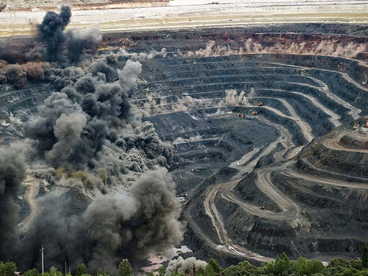
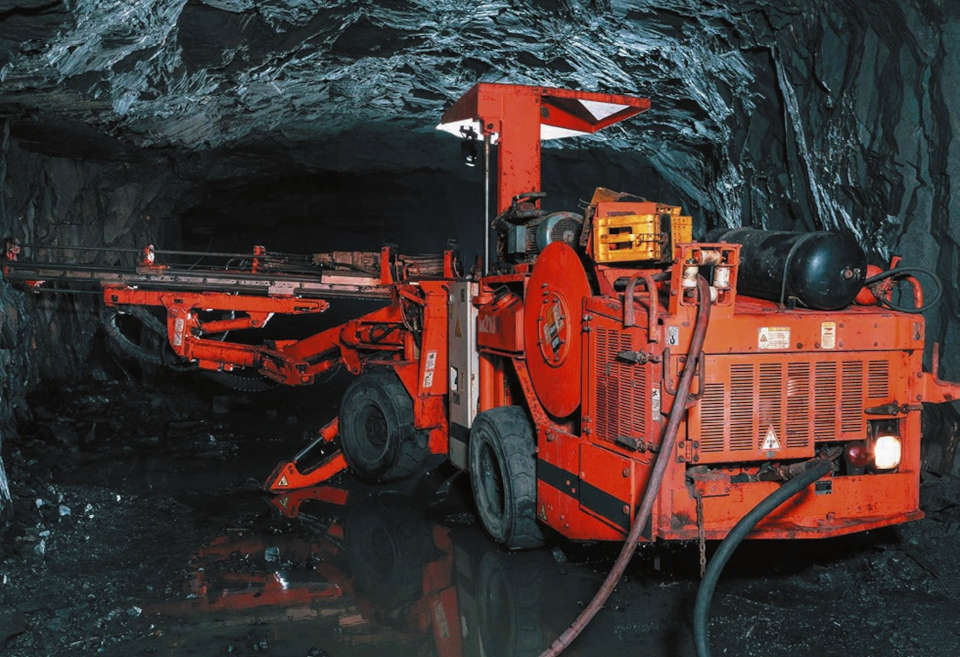

Карьерное бурение характеризуется большой глубиной скважин (до 30-50 метров) и большим диаметром (до 250 мм). Основной метод — вращательное бурение с очисткой забоя сжатым воздухом.

В стесненных условиях шахт используются компактные самоходные установки. Глубина скважин обычно меньше (до 20-30 метров), но требования к вентиляции и пылеподавлению выше.

| Тип станка | Примеры моделей | Диаметр (мм) | Производительность (м/смену) |
|---|---|---|---|
| Шарочные | СБШ-250, DM45, PV-235 | 215-320 | 40-70 |
| Пневмоударные (DTH) | KL-15, ROC L8 | 110-203 | 50-90 |
| Вращательные | БТС-150, DR411 | 150-250 | 30-60 |
| Тип установки | Примеры моделей | Диаметр (мм) | Глубина (м) |
|---|---|---|---|
| Буровые каретки (веерные) | Simba M7, Solo 7-7 | 48-102 | 10-30 |
| Пневмоударники DTH | COP 66, Secoroc | 51-89 | 15-40 |
| Перфораторы на пневмоподдержках | ПТ-36, МР-55 | 32-51 | 3-8 |